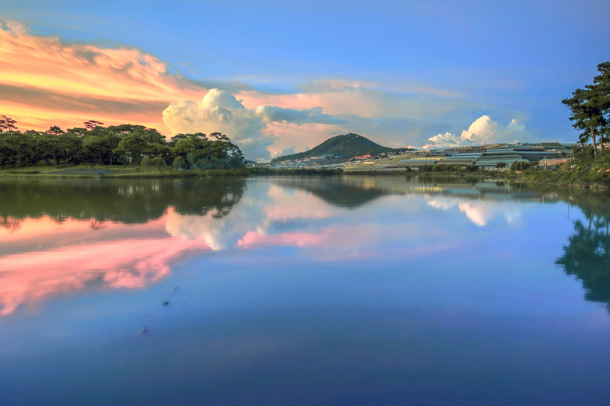
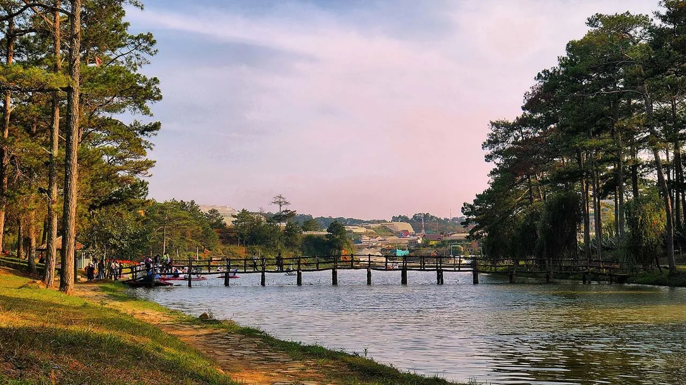
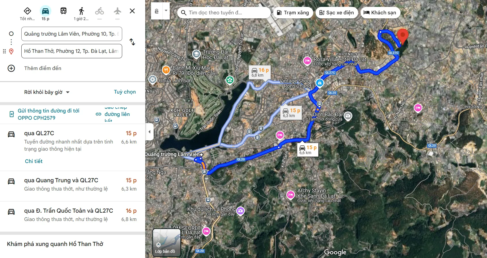
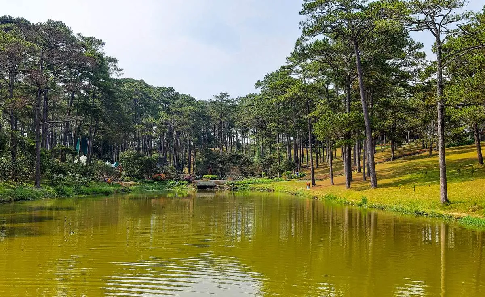
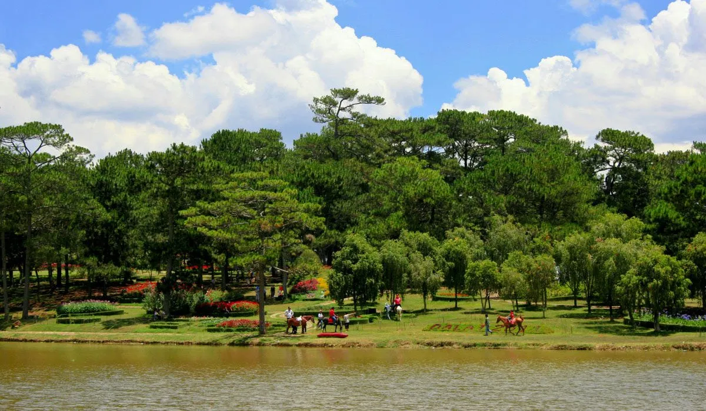
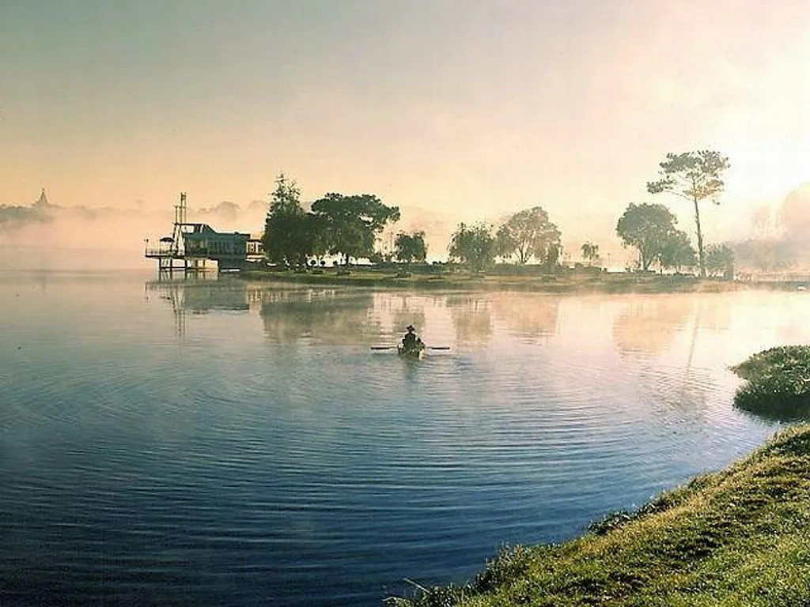
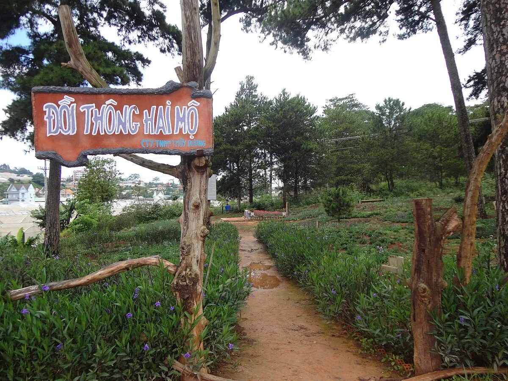
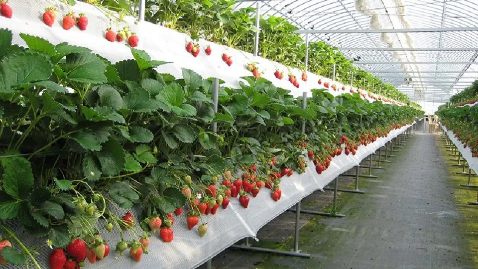
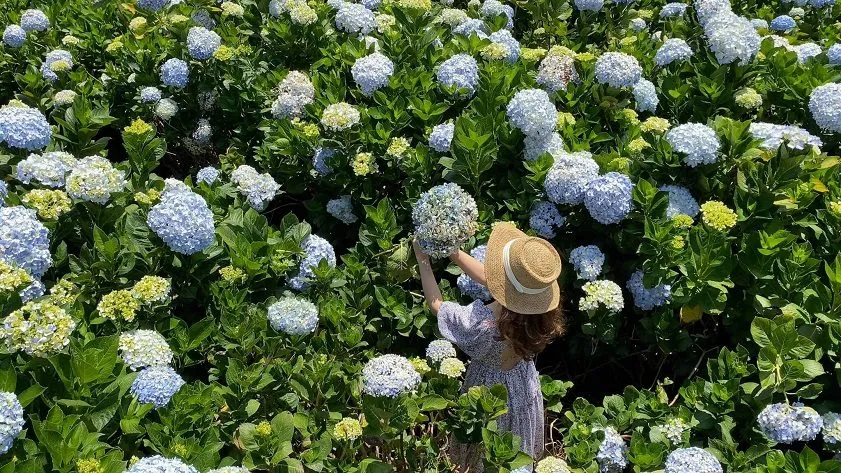
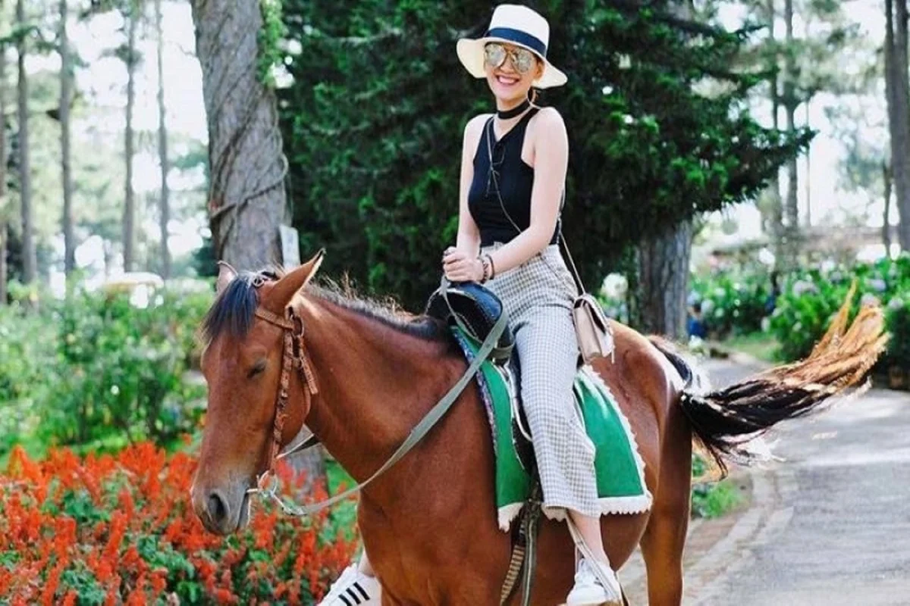

Explore Da Lat Lake of Sighs: Beautiful scenery and interesting experiences

Table of Contents
- 1. Where is Than Tho Lake located?
- 2. Detailed directions to Than Tho Lake
- 3. Latest ticket prices for Lake of Sighs in 2025
-
4. Experience not to miss when visiting Than Tho Lake - Da Lat
- 4.1. Enjoy the charming, poetic natural scenery at Than Tho Lake
- 4.2. Hear about the touching love legend associated with the name "Lake of Sighs"
- 4.3. Visit Hai Mo pine hill - Symbol of eternal love at Than Tho Lake
- 4.4. Experience strawberry picking at Biofresh garden at Than Tho Lake - an interesting activity for all ages
- 4.5. Extreme "virtual living" at the brilliant hydrangea garden at Than Tho Lake
- 4.6. Horseback riding around Than Tho Lake - experience Da Lat in a very unique way
- 4.7. Relax on a duck ride amidst the poetic scenery at Than Tho Lake
- 4.8. Camping overnight - preserving beautiful memories by Than Tho Lake
- 5. What to eat when visiting Than Tho Lake?
- 8. After exploring Than Tho Lake, don't forget to visit Xom Leo Grill & Chill to "recharge"
Than Tho Lake, with its quiet and poetic beauty, is like a watercolor painting in the middle of a romantic highland. This is one of the prominent destinations in Da Lat, attracting a large number of tourists every year.
Besides familiar landmarks such as Cam Ly waterfall, Hai Mo pine hill or Tuyen Lam lake, the foggy city also has a green gem called Than Tho Lake. This place impresses with its charming scenery, cool climate and peaceful space, ideal for relaxing and enjoying nature. Exciting activities at the lake will bring you many memorable memories in your journey to discover Da Lat.
1. Where is Than Tho Lake located?
Than Tho Lake is a prominent destination in the Da Lat travel itinerary, located on Ho Xuan Huong Street, Ward 12, Da Lat City, Lam Dong Province. With its peaceful and poetic beauty, this place attracts a large number of tourists every year.
Only about 7km from Da Lat center, Than Tho Lake is very easy to reach thanks to convenient travel routes. This is an ideal stop for you to combine sightseeing, taking photos and enjoying the fresh space between the highland mountains and forests.
Da Lat, with its poetic natural scenery and chilly climate, is always an ideal destination for those who love peace and romance. Among countless outstanding locations in the city of flowers, Hug Secret Hill** emerges as a charming "secret hill", a place to preserve peaceful and emotional moments.
2. Detailed directions to Than Tho Lake
From the center of Da Lat, specifically the Lam Vien Square area, you can easily move to Than Tho Lake in just about 10 minutes. The suggested route is as follows: start from Tran Quoc Toan street, then turn to Yersin street, continue following the Quang Trung - Xuan Huong Lake route. Going straight along this route, you will quickly come across Than Tho Lake located next to the cool green pine forest.
With the distance not too far and convenient traffic, you can choose to travel by motorbike to actively explore or call a taxi if you want to quickly and comfortably. For those who love experiences, renting a motorbike is the ideal choice to get to the lake while stopping to take photos and admire the natural beauty along the road.
3. Latest Lake of Sighs ticket prices in 2025
One of the things many tourists are interested in when visiting Than Tho Lake is the entrance ticket price and opening hours. Below is the latest updates to help you easily prepare for your trip:
-
Sightseeing ticket price:
-
Adults: 20,000 VND/trip
-
Children: 10,000 VND/trip
-
Operating hours:8:00 – 17:00 daily
With an affordable price, you can comfortably enjoy the fresh natural scenery and participate in many interesting activities at this famous location.
4. Experience not to miss when visiting Than Tho Lake - Da Lat
Not only is it a famous destination thanks to its poetic beauty, Than Tho Lake is also associated with many memorable experiences, captivating many tourists. If you have the opportunity to stop here, don't miss the following special things:
4.1. Enjoy the charming, poetic natural scenery at Than Tho Lake

Than Tho Lake gives visitors the feeling of being lost in a charming landscape painting - where the calm water reflects the sky, the green pine forest whispers in the wind, and the air is fresh and cool all year round. This space is especially ideal for you to temporarily forget the hustle and bustle of the city and find peace in your soul.
The scenery around the lake looks wild and peaceful. Every morning, a light mist covers the surface of the lake, creating a magical scene, like only in fairy tales. Those who love nature, like photography or simply want to enjoy the pristine beauty of Da Lat will definitely fall in love with this place at first sight.
4.2. Hear about the touching love legend associated with the name "Lake of Sighs"

Besides the poetic beauty, Than Tho Lake is also known for a touching love story that makes anyone who hears it feel heartbroken. Legend has it that during the reign of King Quang Trung, there was a couple named Hoang Tungand Mai Nuongwho loved each other deeply. When the country was in danger, Hoang Tung joined the army with the promise to return to her when spring came, when the peach branches bloomed.
However, when the peach tree bloomed, signaling the return of spring, Mai Nuong suddenly received news that he had died in battle. In desperate pain, she went to the lake where they had promised and threw herself into it. Ironically, Hoang Tung is still alive, and as promised, he returned to find his lover. But when he heard that Mai Nuong had died, he also chose to leave forever, to be forever with the girl he loved.
That faithful but tragic love story caused the people here to name the lake Lake of Sighs– as a way to commemorate the eternal love of the couple in the past, and also to remind the next generation of the value of sincere love.
4.3. Visit Hai Mo pine hill - Symbol of eternal love at Than Tho Lake

It is impossible not to mention Hai Mo pine hill - a place near Than Tho Lake, also associated with that sad love story. On the hillside covered with green pines, two tombs lie parallel to each other, said to be the resting place of Hoang Tung and Mai Nuong. The space here is quiet, gentle, carrying a deep sadness that makes everyone who comes feel an indescribable feeling.
Pine hill not only has historical and cultural significance, but is also an ideal place for tourists to roam, admire the scenery or take commemorative photos amid the romantic scenery typical of Da Lat. Whether you go with your lover, friends or alone, this place still brings a very unique feeling - both profound and poetic, full of poetry.
4.4. Experience strawberry picking at Biofresh garden at Than Tho Lake - an interesting activity for all ages

Included in the list of the most famous strawberry gardens in Da Lat, Biofresh attracts a large number of tourists thanks to its green, clean space and organic way of caring for agricultural products. The garden has an area of up to 3 hectares, neatly planned and airy with strawberry beds laden with fruit.
Here, you will have the opportunity to pick red berries yourself and enjoy them right in the garden with their sweet, succulent and fragrant flavor. In addition, the picturesque scenery at Biofresh is also an ideal backdrop for you to "check-in virtually" and save photos that are typical of Da Lat. For those who love experiencing green agriculture and want to learn more about high-tech farming models, this is definitely a stop not to be missed.
4.5. Extreme "virtual living" at the brilliant hydrangea garden at Than Tho Lake

One of the indispensable experiences when traveling near Than Tho Lake is to visit the hydrangea garden - a typical and symbolic flower of Da Lat. The beautiful round hydrangea flowers, blooming in large clusters with all colors from purple, pink, blue to pure white, will make you overwhelmed and excited.
Hydrangeas not only stand out for their gentle appearance but also carry many special meanings of gratitude, sincerity and lasting love. Therefore, this is also a favorite place for couples and those who love taking artistic photos. Don't forget to fully charge your phone battery, prepare "cool" clothes to have sparkling photos amidst the brilliant flower space!
4.6. Horseback riding around Than Tho Lake - feel Da Lat in a very unique way

To fully feel the quiet, poetic beauty of the area around Than Tho Lake, many tourists choose to ride horses or rent carriages to walk around the lake and the windy pine hillsides. The cost of renting a car is usually around 150,000 VND/car, suitable for groups of 2–4 people.
The feeling of sitting on a horse-drawn carriage, slowly gliding through the old pine trees, the peaceful lake surface and the cool breeze passing by is a very "Da Lat" experience - both classic and romantic. This is a great choice for those who love a gentle atmosphere and enjoy sightseeing in a relaxed way without having to walk much.
4.7. Relax on a duck ride amidst the poetic scenery at Than Tho Lake

One of the activities that young people especially love at Than Tho Lake is duck riding on the lake. With a funny shape, duck boats not only help you move easily but also create a lovely highlight for your check-in frame.
In the middle of the clear blue water, you can leisurely pedal your boat, enjoy the cool breeze, and watch the surrounding scenery reflected in the lake surface. The feeling of "floating" in the quiet nature will certainly bring wonderful relaxing moments and unique souvenir photos.
4.8. Camp overnight - keep beautiful memories by Than Tho lake

For those who love experiences close to nature, overnight camping at Than Tho Lake is an ideal choice to fully enjoy the wild and quiet beauty of this place. When night falls, the whole space is engulfed in mist and the flickering lights from the tents will bring an indescribable feeling of peace.
However, for a safe and complete trip, you should contact the resort management board in advance, and prepare all necessary items such as tents, sleeping bags, food, drinking water and warm-up equipment. Camping by the lake, gathering around the fire, telling stories, singing with friends or relatives will definitely be unforgettable memories in the journey to discover Da Lat.
5. What to eat when visiting Than Tho Lake?
After walking around the lake, you can enjoy Da Lat's famous delicacies to recharge your energy. In the area around Than Tho Lake, there are many attractive options for food lovers:
-
Le Dung Restaurant – mountain goat specialty
If you love dishes from goat meat, Le Dung is the perfect choice. The restaurant is located at 5 Ho Xuan Huong, serving from 9:00 to 22:00. Each dish ranges in price from 50,000 - 200,000 VND, suitable for cozy and mountainous meals.
-
Song Hong Restaurant – seafood paradise
For seafood lovers, Song Hong restaurant at 18 Phan Chu Trinh offers a diverse menu from shrimp, squid, fish to fresh seafood dishes prepared on the spot. Open from 10:00 - 22:00, prices range from 50,000 - 500,000 VND/dish.
In addition, don't miss the "specialty" snacks of Da Lat such as: grilled rice paper, wet cake with chicken intestines or grilled spring rolls - which can be easily found at carts or Da Lat night market.
6. Tourist destinations near Than Tho Lake should be combined with sightseeing

To make your trip more enriching, you should combine a visit to a few prominent places near Than Tho Lake. The destinations below are only a few minutes drive from the lake, very convenient for a 1-day or half-day trip.
#### 6.1. Lam Dong Museum - a place to preserve history and culture near Than Tho Lake
-
Address:No. 4 Hung Vuong Street, Ward 10, City. Da Lat
-
Ticket price:free for children, 10,000 VND/adult
The museum is located on the way to Than Tho Lake, convenient to visit. Here, you will learn about the history, culture and customs of the ethnic groups living in Lam Dong, through vivid artifacts and models.
#### 6.2. Valley of Love - romantic paradise near Lake of Sighs
-
Address:No. 3–5–7 Mai Anh Dao, Ward 8, City. Da Lat
-
Ticket price:125,000 VND/person (children under 1m2 and the elderly); 250,000 VND/adult
Located not far from Than Tho Lake, Love Valley is an ideal place for those who love romantic scenery and outdoor activities such as ziplining, paintballing, duck riding... All are included in the ticket price, allowing you to have fun all day!
#### 6.3. Bao Dai Palace - residence of the last king of the Nguyen Dynasty near Than Tho Lake
-
Address:Tran Quang Dieu Street, Ward 10, City. Da Lat
-
Ticket price:25,000 VND/child; 50,000 VND/adult
Palace 1 is an architectural work imbued with French royal style. This place used to be the resting and working place of King Bao Dai. Currently, the palace still retains its original architecture, attracting many tourists to visit and learn.
#### 6.4. Da Lat train station - "ancient" check-in point near Than Tho Lake
-
Address:No. 1, Ward 10, City. Da Lat
-
Ticket price:50,000 VND/person
Da Lat Station is the oldest remaining Indochina station, standing out with its unique saw-tooth tile roof design. You can experience taking a tourist train from the station to Trai Mat, admiring the scenery and enjoying the feeling of returning to old times.
7. Experience you need to know when exploring Than Tho Lake - Da Lat

To make your trip to Than Tho Lake complete and smooth, don't forget to carefully prepare the following useful information!
#### 7.1. When is the best time to visit Than Tho Lake?
The period from December to April next year is the "golden season" to come to Than Tho Lake. This is Da Lat's dry season, when the weather is mildly sunny, little rain, and the air is fresh and chilly - very suitable for picnics, photography or camping. In particular, the scenery around the lake at this time is filled with lush flowers and trees, creating an extremely poetic natural picture.
✅*Small tip:*If you like romantic scenery, come early in the morning to enjoy the mist covering the lake - a specialty only found in the highlands.
#### 7.2. What should you prepare when coming to Than Tho Lake?
Here are some items you should bring when going to the lake:
-
Comfortable clothes: Prioritize lightweight, sweat-absorbent clothes.
-
Sneakers or soft-soled shoes: Will help you move more easily when walking around the lake or climbing a slight slope.
-
Fully charged camera or phone: Because this place has so many virtual living corners, you definitely won't want to miss them.
-
Snacks and drinks: The area around the lake does not have many food and beverage services, so prepare some necessary items if you plan to stay long.
-
Sunscreen, light jacket: Even though the climate is cool, the highland sun can still darken your skin if not well protected.
#### 7.3. A few important notes to make your trip to Than Tho Lake more complete
-
Be proactive in eating and resting: Near Than Tho Lake, there are not many large restaurants, eateries or hotels. If you plan to picnic, stay or participate in outdoor activities, prepare a tent and personal belongings in advance.
-
Entertainment services charged separately: Some games or services at the lake area may incur costs. Therefore, you should carefully ask about the ticket price before using it.
-
Monitor the weather before going: Avoid rainy days to ensure the trip is not interrupted and dangerous when the road is slippery.
-
Maintain hygiene and landscape: Not littering and following the resort's rules is how you help protect the environment here.
-
Avoid going to the lake in the evening if you do not plan to stay, because the surrounding area is quite deserted, with few lights and services.
8. After exploring Than Tho lake, don't forget to stop by Xom Leo Grill & Chill Shop to "recharge your energy"
After a day of wandering around exploring the quiet beauty of Than Tho Lake and neighboring locations, it would be great if you took the time to visit Tiem Xom Leo Grill & Chill - an attractive culinary destination in the heart of Da Lat.
🍽️Intimate, chill space in true Da Lat style
Located at 113 Huynh Tan Phat, Ward 11, the restaurant stands out with its rustic, cozy design but still has the unique "chill" quality of the mountain town. Here, you can enjoy delicious food while enjoying the misty, peaceful scenery of Da Lat.
🍡Extensive menu - standard Da Lat grilled taste
From mouth-watering grilled dishes to rich fish dishes and unique cooking styles, Xom Leo Grill & Chill Shop always knows how to please even the most demanding customers. This is the ideal place to gather with friends, "hanging out" amid the cold weather typical of the plateau.
🤝Friendly service – pleasant experience
The staff here are highly appreciated for their enthusiasm and thoughtfulness. From the moment you order until the moment you leave the restaurant, you will always feel a warm and professional welcome.
📌Reserve Table:*Here*
📌Google Map:*View on map*
📞 Hotline: 076.45.27.336 – 08.99.42.84.34 – 0902.91.22.40
👉Small suggestion: Come early to choose a seat with a nice view and not have to wait long, especially on weekends or evenings!
Than Tho Lake not only impresses with its poetic and romantic beauty amid the green pine forest but also brings visitors many interesting experiences such as duck riding, camping, horseback riding, checking in at the hydrangea garden or picking strawberries at the Biofresh garden. After a day of exploring the beautiful scenery and enjoying the fresh air here, don't forget to visit Xom Leo Grill & Chill Shopat 113 Huynh Tan Phat to enjoy delicious grilled dishes in a cozy, relaxing space - a great way to end an emotional journey of discovery in Da Lat.